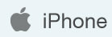
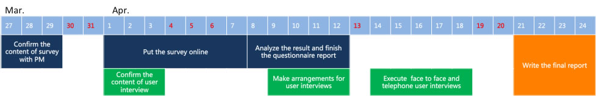
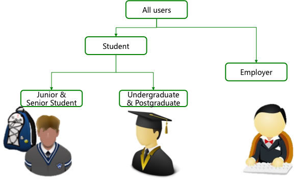

2013.4
User Resercher
User Interview, User Survey
It is a product of Baidu. The website: fanyi.baidu.com The APP download: 
The APP was released in March 2013. And most of my work is related to this APP. As you know, nowaday the demand for translation is hugh in China, because almost everyone is learning English for business, travelling or something else.
I am responsible for user research work including questionnaire, user-interviews, usability testings, focus group and so on. Up to now, I have done sevral projects according to its development. Most of these projects are conducted by myself.
Among those researches, I would pick one project to illustrate here. However, all the research results belong to the company and I have no right to publicise the report. So I would mainly show the process of the project.
This project was proposed in April, just after its release. The product manager was thinking about the next product planning. She wanted to know users' behavior and their favorite features in other competitive products. So I decided to conduct an online questionnaire and following user in-depth interviews with user picked from the questionnaire.

After discussion with PM, we confirmed some qustions and options about the habits of translation APP. For example,
Which translation app do you install in their APP?
How often do you use this translation ?
When do you use this translation app ?
What do you often translate ?
Which features of these translation APPs do they like most ?
Which features (currently not in APP) do they expect to have most?
... ...
I typed this survey into a questionnaire system and then put the survey URL online. About 1000 persons answered this questionaire. And the result was helpful for us to make a following decision.
The last question of the questionnaire is that whether they would like to take part in our following research. If yes, they should leave their phone number and their andress. Then I picked 10 of them, 2 employers, 4 undergraduate or postgraduate students and 4 senior or junior students. Junior and senior students have user interviews through a telephone call while other persons had face to face interviews in our office. These three kinds of persons have a totally different usage behavior and aims. Through this user interviews, I have found various needs, which we would slove in our next version.

After the user interview, I combined two research resluts together and get a report both from qualitative and quantitative perspective. It is an important reference for the design of next version.